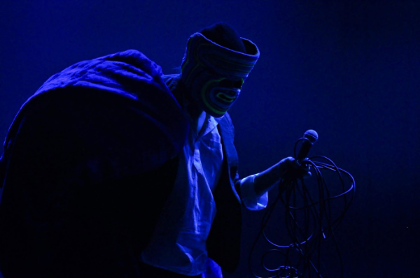
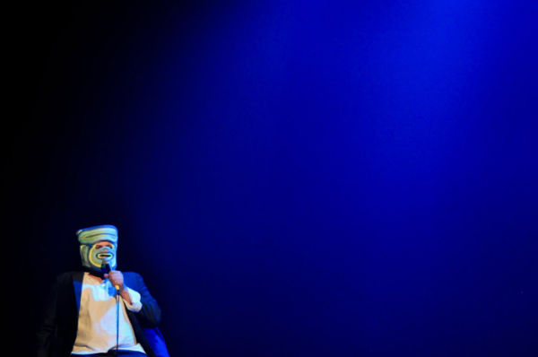

Solo da atriz Paula Lice, do grupo Dimenti, Salvador. FIAC — Festival Internacional de Artes Cênicas da Bahia.
O Dimenti convidava artistas de fora para trabalhar com os artistas de lá. Fiquei em Salvador pouco mais de um mês, em residência com a Paula. Era uma brincadeira que ela estava fazendo, com música, a partir das referências dela de dublagem e de drag queen. Salvador tem uma cena drag muito forte, e a Paula era fascinada pelo transformismo. Ela achou que eu era a pessoa certa para dirigir aquilo — apesar de eu ainda não me montar oficialmente. A gente se encontrou ali, e foi naquele momento que nós dois começamos a nos montar.
Prêmio Klauss Vianna (Funarte/Petrobras). Criação com Sheila Ribeiro e Wagner Schwartz. Estreia no Teatro José Maria Santos, Curitiba — temporada de um mês. Também no Itaú Cultural e no Modos de Existir, Sesc Santo Amaro, São Paulo (2012). Fotografia: Leco de Souza.
Eu entrava de máscara e com figurino de yuppie dos anos 1980. Em algum momento avisava que talvez não estivesse ali. A regra era que os três nunca se observassem em cena, para não destruir o que estava sendo construído. Tinha karaokê de Madonna, tango, e os mortos das nossas famílias convocados para a cena.


“Uma terra de passagem [...] que, com uma delicadeza com a qual não se encontra muito por aí, faz o mundo ficar mais vasto.”